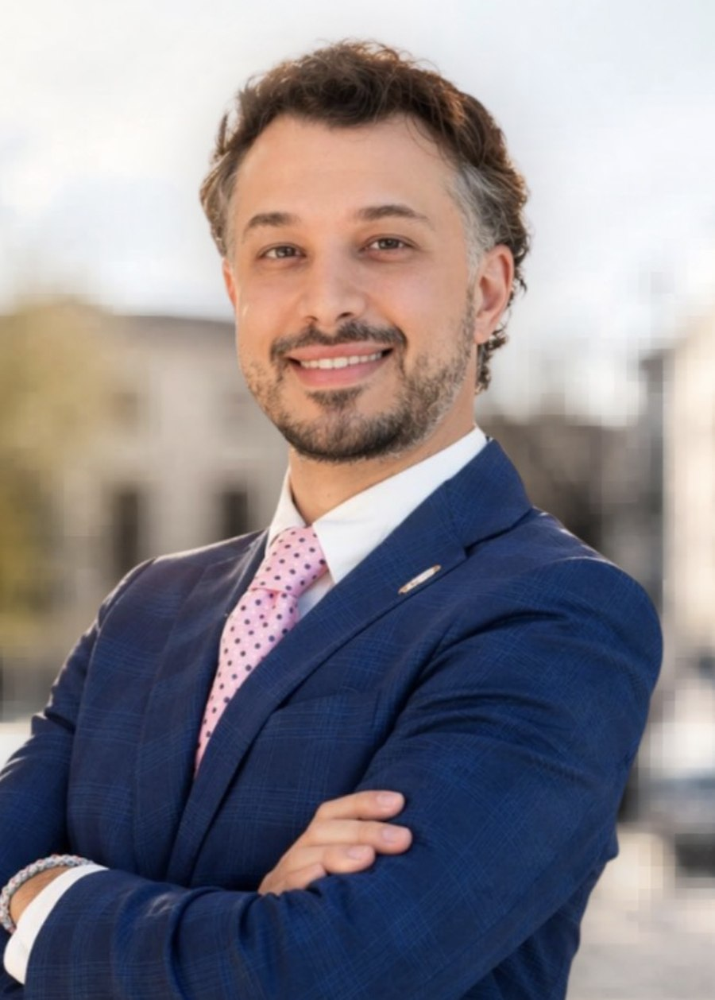
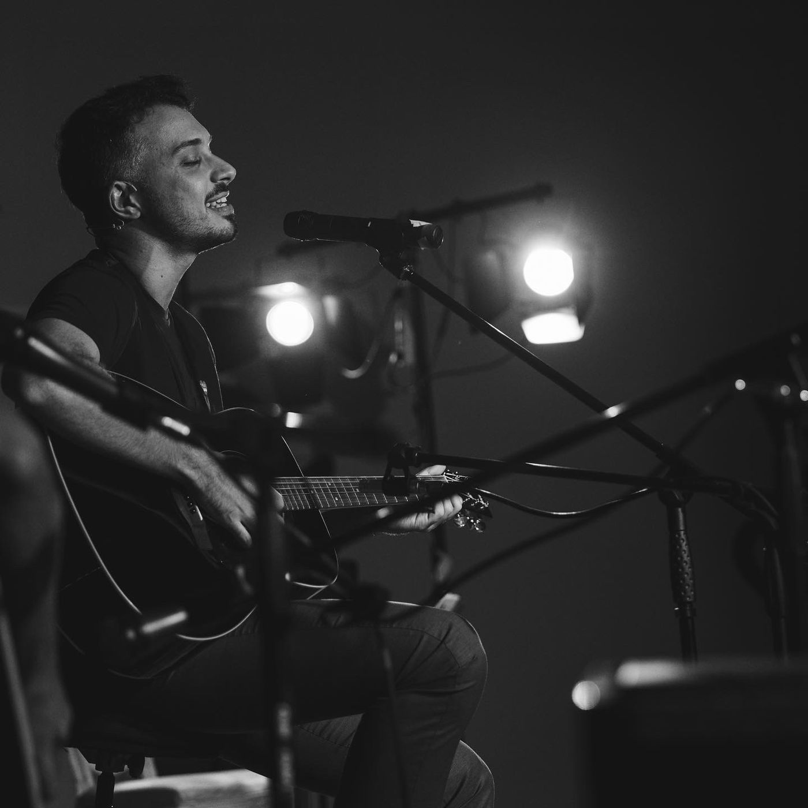
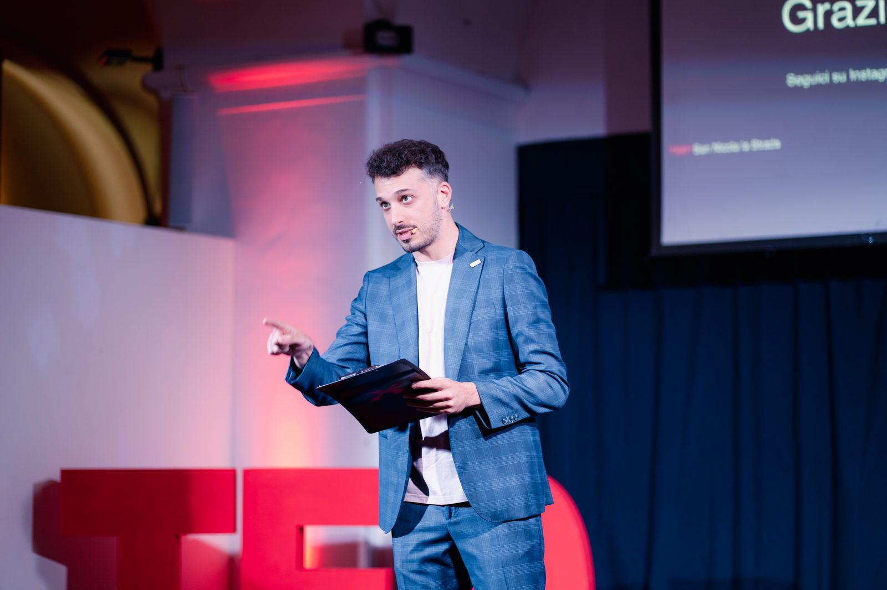

Parla
Co-fondatore di una startup di AI umanistica e accessibile. Responsabile commerciale del progetto. Una scelta deliberata: portare l'intelligenza artificiale al servizio delle persone, non viceversa.
Candidato Consigliere Comunale · Maria Natale Sindaca
L'uomo dei tanti sogni.
Energia giovane, esperienza reale.

«Sono il risultato di ogni avventura, successo, fallimento, livido, sorriso e lotta che ho attraversato. Cerco ogni giorno di essere la versione migliore di me stesso, dando valore al mio tempo e alle mie relazioni. L'impatto che possiamo (e dobbiamo) avere sul nostro mondo parte da noi stessi.»

Una storia di partenze, ritorni e radici che tengono.
Luca cresce a San Nicola la Strada e si forma sui banchi del Liceo Scientifico A. Diaz, lo stesso liceo a cui, quindici anni dopo, dedicherà la prima edizione del TEDx cittadino. Si laurea in Scienze Politiche e Relazioni Internazionali alla Seconda Università degli Studi di Napoli: la teoria delle istituzioni come cassetta degli attrezzi di chi vuole, un giorno, attraversarle.
Sceglie il Nord. Ci resta nove anni. Inizia gestendo un ristorante a Milano, costruisce competenze nell'associazionismo internazionale come Vice President Marketing di AIESEC Italia, gestendo team fino a 17 persone, e si certifica in Web Marketing & Copywriting. Passa per il commerciale (Hygien Tech), per la consulenza bancaria a privati (BNL Gruppo BNP Paribas), e arriva a TMP Group, dove in due anni viene promosso tre volte: Account Executive, poi Head of Sales, poi Manager of Operations.
Nel 2023 torna a casa. Diventa Project Manager in una società benefit, poi Head of Sales di Boosha AI (agenzia che porta l'intelligenza artificiale nelle imprese italiane) e a fine 2024 cofonda Parla, startup di AI umanistica e accessibile. Nel 2025 fonda il TEDxSanNicolalaStrada. Nel 2026 si candida.
«L'impatto sul mondo parte da noi stessi». È la sua frase. E i suoi nove anni di Nord raccontano cosa significa farne uso.
Amministrare una città non si improvvisa. Ognuna di queste competenze è uno strumento concreto da mettere al servizio dei cittadini di San Nicola la Strada.
Scienze Politiche e Relazioni Internazionali, conseguita presso la Seconda Università degli Studi di Napoli. Le fondamenta: amministrazione pubblica, economia, diritto. La cassetta degli attrezzi di chi vuole capire e cambiare le istituzioni.
Liceo Scientifico "Armando Diaz", succursale di San Nicola la Strada. Lo stesso liceo a cui ha dedicato la prima edizione del TEDx cittadino, quindici anni dopo.
Corso di formazione professionale presso Monos Formazione (2018). Le parole non sono ornamento: sono strumento. Comunicare bene una buona idea è metà del lavoro per realizzarla.
Formatore in intelligenza artificiale applicata al lavoro, attivo come Head of Sales di Boosha AI e co-fondatore di Parla. Il futuro non aspetta: nessuna comunità può permettersi di restare indietro.
Metodo giapponese che allinea passione, talento, missione e mestiere. Lo applico con i team aziendali. Voglio applicarlo alle politiche per i giovani della città.
Formatore aziendale su comunicazione, leadership, problem solving e competenze tecniche. Ogni cittadino è una risorsa, se messo nelle condizioni di esprimersi.
Autore di "Una barzelletta raccontata male" (pièce teatrale, 2023) e di una produzione poetica continua. La cultura non come hobby: come pratica civile quotidiana.
Tutto questo, al servizio di una città che merita di tornare a essere viva. Senza scorciatoie, senza promesse facili.
L'impegno civico non si dichiara, si pratica. Da oltre dieci anni Luca dedica tempo, gratuito e continuo, alle organizzazioni che fanno comunità. Perché un consigliere che non ha mai dato nulla, difficilmente saprà chiedere bene per una città.
Associazione di promozione sociale con sede in San Nicola la Strada, Via Grotta 31. Si occupa di beneficenza e organizzazione di eventi sul territorio. Iscritta al Registro Unico Nazionale del Terzo Settore (RUNTS) dal 12 gennaio 2026, nella sezione "Altri Enti del Terzo Settore" (art. 46 D.Lgs. 117/2017).
Ideatore e organizer del primo TEDx della città: evento con licenza TED, no profit, organizzato in autonomia. I edizione (2025) dedicata agli ottanta studenti del Liceo Diaz; II edizione (9 maggio 2026) alle Regie Cavallerizze della Reggia di Caserta, con sconti per studenti e associazioni del territorio.
Sessioni di orientamento alle emozioni rivolte agli studenti delle classi superiori. Lezioni di soft & hard skills tenute pro bono nell'istituto dove Luca stesso si è formato: ciò che ha ricevuto, restituisce.
Tre anni nella più grande organizzazione internazionale di leadership giovanile. Vice President Marketing del comitato di Napoli (gestione team da 8 a 17 persone, vincitore della Sales Development Challenge, +48% applicants Global Volunteer, +51% Global Entrepreneur). Marketing Strategy Consultant per le sedi di Trieste, Napoli Parthenope e Palermo. Coach for Expansion Initiatives per Roma Tor Vergata e Ferrara.
Prima di candidarmi, ho voluto restituire qualcosa alla mia città. TEDxSanNicolalaStrada nasce nel 2025 dalla mia visione: un evento con licenza TED, organizzato in autonomia e senza fini di lucro, per portare nel cuore della provincia di Caserta storie e idee che meritano di essere condivise.
La prima edizione l'abbiamo dedicata agli ottanta studenti del Liceo Diaz: quelli che, come me un tempo, siedono oggi tra i banchi con sogni ancora da scrivere. La seconda edizione, il 9 maggio 2026, porta il TEDx alle Regie Cavallerizze della Reggia di Caserta, con sconti dedicati a studenti e associazioni del territorio.
Non è marketing politico. È metodo: prima fai, poi parla.

Negli ultimi quattro anni Luca ha condotto galà finanziari di Borsa Italiana, ha portato sul palco magistrati anti-camorra, capitani di squadre, due volte medagliati olimpici e autori. È stato ospite di trasmissioni TV, podcast nazionali, festival culturali e magazine. E ha persino diviso il set con The Jackal. La sua voce è già abituata ai microfoni, e i microfoni a lui.
Energia giovane, esperienza reale.
San Nicola Città Viva.
La campagna è una lunga conversazione. Iniziamola.